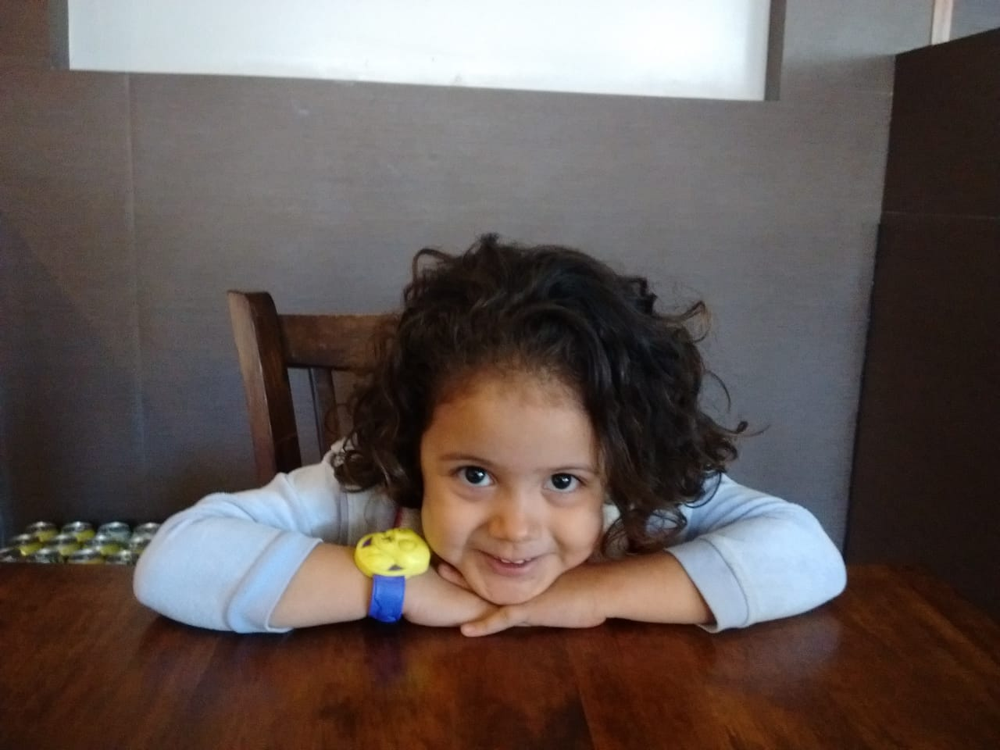
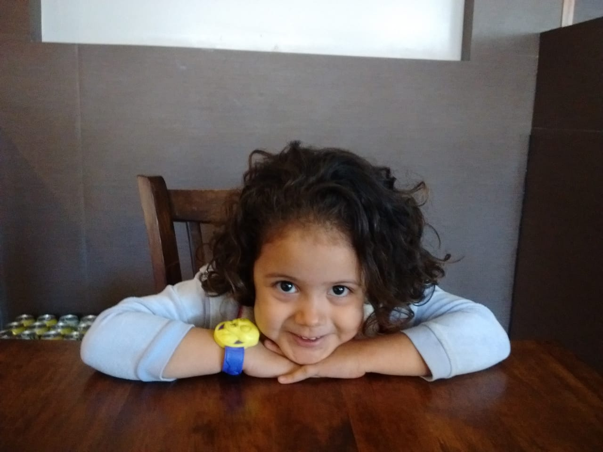
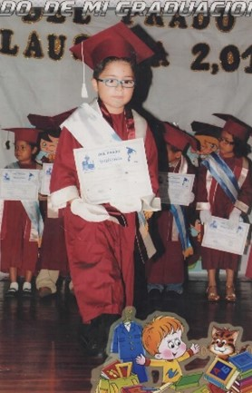
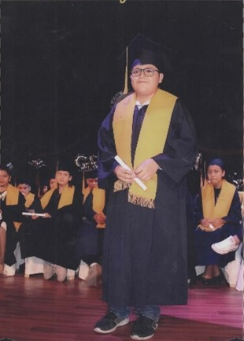
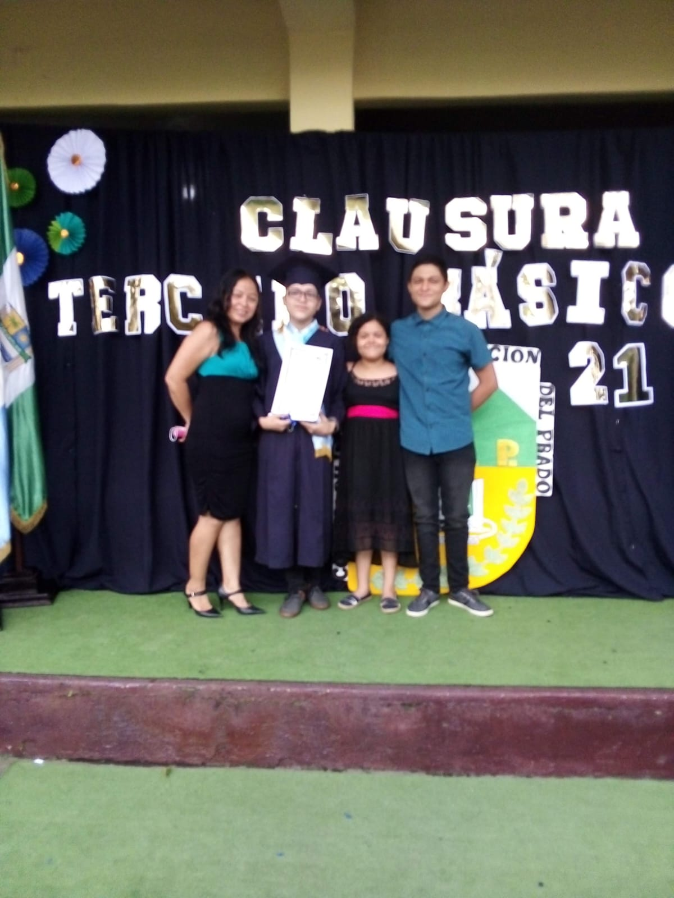
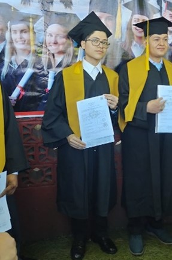

Desde el principio...
Mi nombre es Ángel Ricardo García Estrada. Nací el 25 de noviembre de 2005 en el Instituto Guatemalteco de Seguridad Social (IGSS) ubicado en Escuintla, Escuintla, Guatemala.

Mi padre es Marvin García, originario de Guatemala, Guatemala. Viajero y ejecutivo de ventas, es una persona muy trabajadora que hace todo por su familia y fue quien me enseñó a esforzarme por mis metas, valorar mis estudios y mi trabajo.
Mi madre, Adilia Estrada, nacida en Escuintla, es una mujer servicial, dedicada, persistente y dispuesta a sacrificar sus propias comodidades por el bienestar de su familia y amigos. Fue la persona que me crió y enseñó los buenos valores.
Ellos siempre han hecho todo lo necesario para cuidar y mantener a nuestra familia, a pesar de todas las dificultades que se les presentan. Siempre han encontrado una forma de salir adelante.

Crecí con mi hermano mayor, Steve, y mi hermana menor, Karla, con quienes he compartido toda mi vida.
 

Pasé toda mi niñez y adolescencia en el mismo lugar, específicamente en la colonia Costa Bella. Tenía varios familiares como vecinos en esa zona, lo que facilitó que, durante mis años de preprimaria y primaria, mi abuela se encargara de cuidarme a mí y a mis hermanos cuando regresábamos de la escuela, ya que mi madre estaba trabajando.
A los 4 años, comencé a estudiar Prekínder en el Colegio Bilingüe Con Computación Del Prado. Allí estudié toda mi preprimaria, primaria y nivel básico. Luego de eso, estudié un bachillerato en computación en el Instituto De Educación Básica Y Bachillerato Por Madurez Plan Fin De Semana y al mismo tiempo estudié para Técnico y soporte de sistemas informáticos en el Intecap Centro Escuintla No. 1.




Mi vida fue marcada por un aspecto físico en la familia, ya que meses después de nacido, mis papás notaron en mí una molestia y un comportamiento raro. Me cuentan que yo me acercaba mucho a los objetos, entrecerraba los ojos y uno de mis ojos no enfocaba directamente en la misma dirección que el otro. Después de varios exámenes, fui diagnosticado con estrabismo y astigmatismo, viéndome así obligado a usar lentes desde muy pequeño.